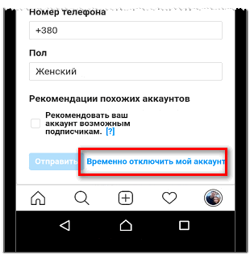
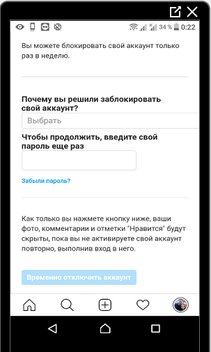
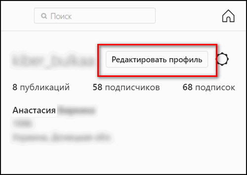
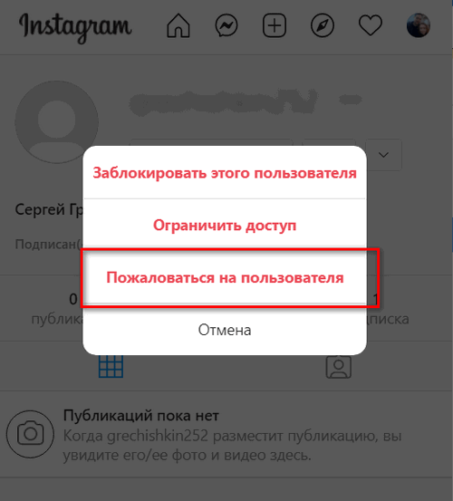
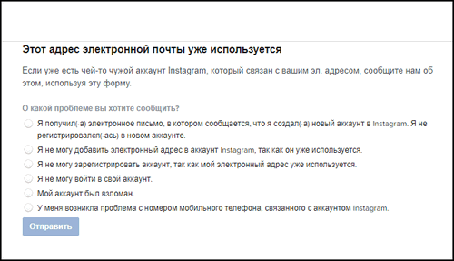
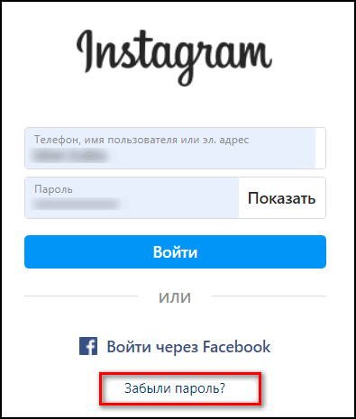

Как заблокировать аккаунт в Инстаграм и восстановить его

- Временно отключить аккаунт в Инстаграме*
- Через мобильную версию
- Через компьютер
- Как заблокировать чужой аккаунт в Инстаграме*
- Сколько нужно жалоб чтобы полностью заблокировали другого человека
- Вернуть страницу в Инстаграме* если удалил сам
- Через компьютер
- Аккаунт удален из-за нарушений – как восстановить
- Если забыл пароль от страницы в Инстаграме*
- Что делать если невозможно восстановить учетную запись
Временно отключить профиль в Инстаграме* возможно через компьютерную версию. С мобильной невозможно отключить страницу на кратковременный период, как и полностью удалить учетную запись.
Временно отключить аккаунт в Инстаграме*
Временная блокировка означает, что пользователь сможет восстановить спустя месяц. В течение этого срока его страница будет недоступна для просмотра, подписки и передачи сообщений. В мобильной версии отсутствует функция, чтобы временно приостановить активность учетной записи. Поэтому владельцу нужно перейти к компьютерной.
Другие особенности отключения:
- можно вернуть страницу в течение 30 дней. После – она становится недоступной к разблокировке;
- даже зная номер телефона или никнейм – другие пользователи не смогут найти аккаунт;
- у друзей не высветится страница в списке активных и доступных для общения.
В мобильном формате нет даже деактивации учетной записи. Все действия выполняются либо с браузера, либо с помощью раздела «Справка». Временно деактивируя учетную запись, пользователь не теряет свои фотографии и видео, которые были размещены ранее. Он сможет восстановить страницу и скачать материалы в любое время. При полном удалении ему придется предварительно скачать данные, воспользовавшись архивом и уже после очистить учетную запись.
Временная блокировка не влияет на функции социальной сети в дальнейшем. У пользователя не будет ограничений по добавлению видео или фотографий, работе с подписчиками.
Через мобильную версию
Временно заблокировать страницу в Инстаграме* можно через встроенный или установленный браузер. Временно заблокировать страницу с мобильного устройства:
- Зайти в браузер – ввести название сайта: «instagram.com*».
- Перейти – авторизоваться в своем профиле.

- Моя страница – Редактировать.
- В конце списка появится: «Временно отключить аккаунт».

- Выбрать причину, почему страницу нужно временно отключить.
Далее, пользователю нужно подтвердить временное удаление страницы и закрыть вкладку. Для восстановления достаточно заново войти со своими учетными данными. Еще один способ, как временно деактивировать – удалить информацию о себе, предварительно сохранив её на компьютер или смартфон. Пользователю нужно скопировать биографию, а также все размещенные фотографии и видео. Отдельный раздел для хранения медиафайлов – Архив. Из него можно достать ранее созданные Истории и публикации, которые автор профиля решил скрыть.
Через компьютер
Браузерный вариант на мобильном устройстве и компьютере ничем не отличается. Единственная разница в том, что нужно авторизоваться на ПК или через ноутбук. Как заблокировать свой аккаунт:
- Зайти в Инстаграм* – авторизоваться.
- Перейти в раздел: «Редактировать профиль».

- Выбрать: «Временно отключить» - указать одну из причин.
- Сохранить внесенные изменения.
При временной блокировке нужно выбрать одну из нескольких причин. Это может быть:
- Инстаграм* отнимает много времени;
- я не хочу получать уведомлений;
- мне кажется, что я делюсь большим количеством информации о себе;
- меня заинтересовала другая социальная сеть.
В половине причин появятся способы решения, как «Установить таймер для слежения», «Скрыть публикации» или «Отписаться от неинтересных страниц». Среди всех можно выбрать: «Другое» и просто временно отключить страницу.
Как заблокировать чужой аккаунт в Инстаграме*
Удалить чужую страницу навсегда, если у владельца не было нарушений – практически невозможно. Но если аккаунт нарушает правила социальной сети, есть вариант как временно ограничить активность:
- Зайти в социальную сеть – выбрать страницу.
- Нажать сверху три точки – Пожаловаться.

- Выбрать причину для жалобы и отправить.
К примеру, если в аккаунте размещены чужие фотографии, на которые автор не дал согласия, можно отправить запрос в службу поддержки. Или, если на странице распространяют фейковые данные, которые могут навредить другим пользователям. В основном, на серьезные нарушения администрация сама обращает внимание. Это размещения снимков, где есть сцены жестокости, показаны дети без взрослых или контент может свидетельствовать о преступлениях.
Сколько нужно жалоб чтобы полностью заблокировали другого человека
Определенного числа жалоб для блокировки чужого аккаунта нет, а если администрация не усмотрит нарушений – все обращения будут отклонены. Следить за блокировкой или ограничением возможностей на чужой странице возможно через раздел: «Уведомления», куда приходят все оповещения относительно предыдущих жалоб. Что нужно, чтобы заблокировали чужую страницу:
- подать от 10 жалоб с разных аккаунтов, но по одной причине;
- в профиле должны быть нарушения, которые противоречат политике пользования;
- регулярно обращаться в техническую поддержку.
Быстрая блокировка происходит, если автор другого аккаунта целенаправленно оскорбляет подписчиков, пишет негативные комментарии. Или разжигает межнациональную вражду. Но в этом случае доказательства должны быть весомыми: отрицательные картинки, тексты.
Другие способы, как заблокировать другого человека:
- обратиться к взломщикам. Но это платно и зачастую, попадает к мошенникам и сам обратившийся;
- привлечь целое сообщество к блокировке;
- определить причину для блокировки, которая на 100% противоречит Инстаграму*.
К примеру, если нужно заблокировать группу, где без согласия моделей размещаются снимки – нужно привлекать другое сообщество. Помимо этого пишут жалобы, ссылаясь на
Вернуть страницу в Инстаграме* если удалил сам
Восстановить заблокированный аккаунт в Инстаграме*, если удалил сам, возможно лишь в случае «Временной блокировки». Это не полное удаление, при котором будут стерты все данные. Но если владелец профиля деактивировал аккаунт и подтвердил согласие – значит вернуть невозможно. Единственные случаи, когда техническая поддержка может оказать помощь – если обратились службы правопорядка. Если временно заблокировал страницу:
- Зайти в Инстаграм* – авторизоваться с помощью логина и пароля.
- Подождать, пока страница окончательно загрузится.
Восстановление временно удаленного профиля не займет много времени. Чтобы вернуть такой аккаунт, владельцу не нужно менять пароль или подтверждать по номеру телефона. Но после восстановления лучше всего поменять учетные данные, чтобы анкету не смогли взломать.
Через компьютер
В некоторых случаях стоит обратиться в техническую поддержку. Если с момента удаления прошло менее 24-х часов – есть шанс, что профиль могут вернуть. Но главная проблема в скорости ответов от поддержки Инстаграма*: в течение 72-х часов. Получить поддержку:
- Воспользоваться ссылкой: Помощь в Instagram*
- Выбрать вариант: «Я не могу зарегистрироваться, потому что мой email используется».

- В поле для описания проблемы описать возникшую ситуацию – прикрепить контактный адрес электронной почты.
- Отправить.
Эта форма предназначена для пользователей у которых нет зарегистрированной учетной записи. Так как, получить доступ к аккаунту не удается – то ей можно воспользоваться, чтобы обратиться за восстановлением. Перейти к прямой переписке с представителями Инстаграма* не получится. Социальная сеть не поддерживает функцию непрерывного общения с пользователями. При наличие второго аккаунта, можно создать обращение с мобильной версии, перейдя по вкладку: «Справка» - Сообщить о проблеме.
Аккаунт удален из-за нарушений – как восстановить
В социальной сети есть правила, которые нужно пользователям, чтобы не оказаться заблокированными. Если владелец учетной записи нарушает требования Инстаграма* более трех раз – его страница будет навсегда удалена. Причины, почему разблокировать такой заблокированный Инстаграм* не получится:
- если владелец размещал снимки или видео порнографического характера – его профиль будет удален навсегда;
- выдавая себя за другого человека, осуществлял мошенническую деятельность;
- если использовал ссылки, которые ввели на фишинговые сайты;
- шантажировал пользователей их же снимками или порочащими материалами;
- оскорблял по национальному, расовому или гендерному признаку.
Все эти пункты относятся к постоянно блокировке, если владелец страницы постоянно размещал такие материалы или писал комментарии с таким текстом. При первом нарушении появится уведомление, где будет описана причина блокировки и меры, предпринятые администрацией. К примеру, если это комментарий на который пожаловались другие пользователи – появится оповещение, что именно этот отзыв заблокирован. Автор получает предупреждение, которое суммируется с дальнейшими. Если владелец страницы разместил у себя видео или фото, которое ему не принадлежит или содержит авторское право – эта публикация будет удалена. Появится оповещение, что определенная запись заблокирована и её можно вернуть через обжалование. Но если у владельца аккаунта нет документов, которые подтверждают права на использованный контент – лучше отказаться.
Если забыл пароль от страницы в Инстаграме*
Еще одна проблема, с которой может столкнуться пользователь социальной сети – забыл пароль и не получается войти. Есть способ, как решить ошибку:
- Зайти в Инстаграм* с мобильной версии – ввести логин.
- Нажать снизу: «Забыл пароль» - ввести номер телефона или адрес электронной почты, к которым привязана страница.

- Получить код для восстановления – ввести в появившуюся графу.
- Отправить – придумать новую комбинацию и повторить два раза.
Те же действия можно выполнить с компьютерной версии. Но для восстановления страницы необходимо, чтобы к учетной записи был прикреплен либо номер, либо адрес электронной почты. Потому что без такого способа верификации вернуть страницу не получится.
В случае, если пользователь ввел верно никнейм, а Инстаграм* не находит аккаунт – нужно проверить страницу через друзей. Попросить кого-то из знакомых, чтобы проверили правильность написания логина. При длительном отсутствии владельца страницы могут взломать учетную запись и в таком случае, нужно обращаться в техническую поддержку.
Что делать если невозможно восстановить учетную запись
При полной деактивации вернуть аккаунт не получится. При удалении появляется плашка, где написано: «Действие нельзя отменить, все данные будут удалены». И в этом случае, пользователь уже не сможет обратиться за восстановлением, но сможет получить архив со своими снимками и видео. Как получить архив с личными файлами:
- Перейти по ссылке: Доступ к данным
- Выбрать первый вопрос – в вариантах: «У меня аккаунта, но я хочу получить данные».
- Ввести свой адрес электронной почты, страну проживания и имя/фамилию.
- Отправить запрос и подождать, пока официальная поддержка ответит.
В течение трех суток должен прийти ответ и архив с файлами, если данные подтвердились. Если же администрация определит, что электронный адрес не принадлежит ранее зарегистрированному пользователю – могут прислать сообщение с требованием: сделать фото с листком бумаги.